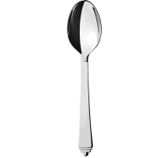
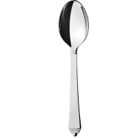
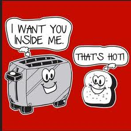
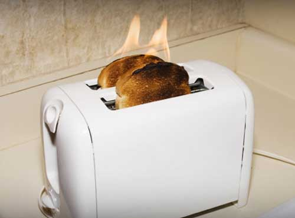
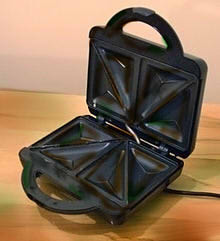
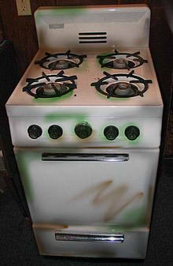
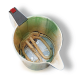
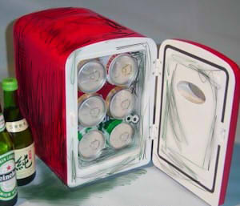

Toaster's Tale
Toaster was born early in the year 2000. She lived out her early years making toast for many a breakfast. She enjoyed her role in the house that adopted her, but as time went on, she found that she was making less and less toast. She began to miss the thrill of toast-making, the pop she made when the toast was done. It was around this time that she noticed Kettle. She saw him sitting there on the counter top, boiling water as steam billowed from him. He was the most amazing thing she had ever seen, with his sleek plastic body and his red switch. She found herself attracted to him and she was experiencing a thrill much like that from her toasting days. Over the course of a few months, they got to know each other and fell in love. In the year 2007 they were married. The ceremony was held on top of the oven and they were united by the Sandwich Maker.
Their marriage was a happy one, but in 2010, Kettle got limescale, due to his owner neglecting to clean him. This made him boil water less efficiently and Toaster began to realise they didn't have very much in common. It was at this point that she began to notice bread again. She began to have a heated affair with bread, making hundreds of slices of toast a week. She knew it was wrong, but she didn't want to hurt Kettle by telling him she no longer felt attracted to him. Eventually, in in late 2011, Kettle found out. He was appalled that Toaster could betray him. She tried to deny it, but her crumb tray was full of crumbs of bread and toast. Through mediation with the sandwich maker, Toaster and Kettle decided to part ways. Kettle became depressed and left the kitchen. Toaster moved on with her life, and continued to make toast for many years. She never found out what became of Kettle.
 
Once you pop you just can't stop!
  